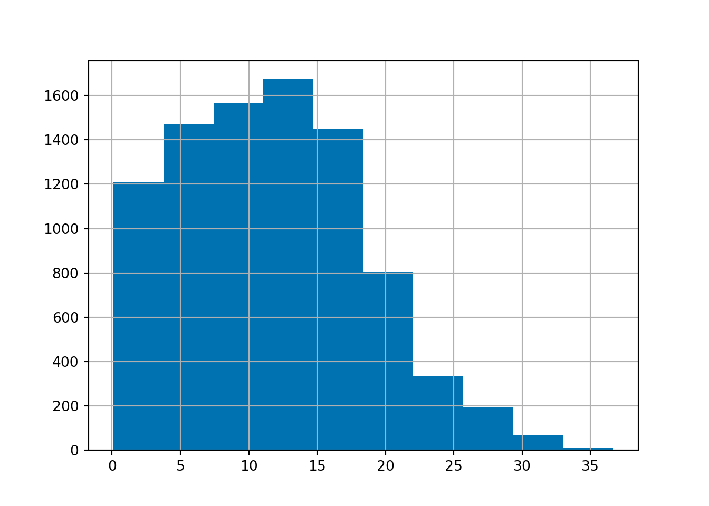

import h5pyd
import numpy as np
import pandas as pd
import matplotlib.pyplot as plt
import matplotlib.image as mpimg
from pyproj import Proj
import dateutil
import folium
#from IPython.display import display, MarkdownWind Resource Temporal Variability
Diurnal and monthly variability of NREL Wind Toolkit Data
This tool quantifies and visualizes the diurnal and monthly variability of wind resources
About the data
Access data
f = h5pyd.File("/nrel/wtk-us.h5", 'r', bucket="nrel-pds-hsds")
windspeed_100m_dset = f['windspeed_100m']datetime_df = f["datetime"]
datetime_df = pd.DataFrame({"datetime": datetime_df[:]},index=range(0,datetime_df.shape[0]))
datetime_df['datetime'] = datetime_df['datetime'].apply(dateutil.parser.parse)# datetime range for 2012
start_date = '2012-01-01'
end_date = '2013-01-01'
datetime_range = datetime_df.loc[(datetime_df.datetime >= start_date) & (datetime_df.datetime < end_date)].indexDetermine nearest timeseries for given Lat/Lon
# This function finds the nearest x/y indices for a given lat/lon.
# Rather than fetching the entire coordinates database, which is 500+ MB, this
# uses the Proj4 library to find a nearby point and then converts to x/y indices
def indicesForCoord(f, lat_index, lon_index):
dset_coords = f['coordinates']
projstring = """+proj=lcc +lat_1=30 +lat_2=60
+lat_0=38.47240422490422 +lon_0=-96.0
+x_0=0 +y_0=0 +ellps=sphere
+units=m +no_defs """
projectLcc = Proj(projstring)
origin_ll = reversed(dset_coords[0][0]) # Grab origin directly from database
origin = projectLcc(*origin_ll)
coords = (lon_index,lat_index)
coords = projectLcc(*coords)
delta = np.subtract(coords, origin)
ij = [int(round(x/2000)) for x in delta]
return tuple(reversed(ij))
lake_wyola = (42.501587, -72.429984)
lake_wyola_idx = indicesForCoord(f, lake_wyola[0], lake_wyola[1] )
print("y,x indices for Lake Wyola: \t\t {}".format(lake_wyola_idx))y,x indices for Lake Wyola: (1154, 2409)print("Coordinates of Lake Wyola: \t {}".format(lake_wyola))Coordinates of Lake Wyola: (42.501587, -72.429984)print("Coordinates of nearest point: \t {}".format(f["coordinates"][lake_wyola_idx[0]][lake_wyola_idx[1]]))Coordinates of nearest point: (42.494087, -72.414062)Map
map of site and nearest point
nearest_site_coords = f["coordinates"][lake_wyola_idx[0]][lake_wyola_idx[1]]
site_map = folium.Map(location = lake_wyola, zoom_start = 12)
folium.Marker(lake_wyola, popup = 'Lake Wyola').add_to(site_map)<folium.map.Marker object at 0x7fb3c00cbf10>folium.Marker(nearest_site_coords, popup = 'Nearest Site').add_to(site_map)<folium.map.Marker object at 0x7fb3c00cbbe0>site_mapMake this Notebook Trusted to load map: File -> Trust Notebook
# Get the entire 2012 timeseries data for a point near Lake Wyola
tseries = windspeed_100m_dset[min(datetime_range):max(datetime_range)+1, lake_wyola_idx[0], lake_wyola_idx[1]]# convert numpy array to pandas dataframe
windspeed_100m_df = pd.DataFrame(tseries, columns = ["windspeed_100m"], index = datetime_df.iloc[datetime_range,].datetime)windspeed_100m_df["year"] = windspeed_100m_df.index.year
windspeed_100m_df["month"] = windspeed_100m_df.index.month
windspeed_100m_df["day"] = windspeed_100m_df.index.day
windspeed_100m_df["hour"] = windspeed_100m_df.index.hour
windspeed_100m_df["day_of_year"] = windspeed_100m_df.index.dayofyearStatistical analysis
Data exploration
Start with graph of entire year
#plt.style.use("seaborn-colorblind")
fig, ax = plt.subplots()
fig.set_size_inches([8, 4])
ax.plot(windspeed_100m_df.index, windspeed_100m_df["windspeed_100m"], linewidth = 0.25)
ax.set_xlabel("date")
ax.set_ylabel("wind speed at 100 meters (m/s)")
ax.set_title("Hourly Wind Speed at Lake Wyola")
plt.axhline(y=3.6, linewidth = 2.5, linestyle = '--', color = "black")
ax.annotate("cut-in speed: 3.6 m/s", xy = [windspeed_100m_df.index[0], 4.5],
fontsize = 12,
bbox={'facecolor': 'white', 'alpha': 0.75, 'pad': 1})
plt.axhline(y=24.6, linewidth = 2.5, linestyle = '--', color = "black")
ax.annotate("cut-out speed: 24.6 m/s", xy = [windspeed_100m_df.index[0], 25.5],
fontsize = 12,
bbox={'facecolor': 'white', 'alpha': 0.75, 'pad': 1})
ax.annotate("Hurricane Sandy", xy = [windspeed_100m_df.index[7250], 23],
xytext = [windspeed_100m_df.index[3000], 21.5], fontsize = 12,
arrowprops={"arrowstyle":"->", "color":"black"})
plt.show()# site_coord_list = [(42.501587, -72.429984), (40.7128, -74.0059)]
# #site_coord_list = [(42.501587), (-72.429984)]
# site_name_list = ["Lake Wyola", "New York City"]
# site_dict = {"Lake Wyola":("42.501587", "-72.429984"), "New York City":("40.7128", "-74.0059")}
#
# for site in site_dict:
# print(site, " is located at ", site_dict[site])
# lat = float(site_dict[site][0])
# lon = float(site_dict[site][1])
# nearest_point_idx = indicesForCoord(f, lat, lon)
# display(Markdown("{site}"))
# print("The site nearest to ", site, " is located at ", f["coordinates"][nearest_point_idx[0]][nearest_point_idx[1]])
# tseries = windspeed_100m_dset[min(datetime_range):max(datetime_range)+1, nearest_point_idx[0], nearest_point_idx[1]]
# windspeed_100m_df = pd.DataFrame(tseries, columns = ["windspeed_100m"], index = datetime_df.iloc[datetime_range,].datetime)
# windspeed_100m_df["year"] = windspeed_100m_df.index.year
# windspeed_100m_df["month"] = windspeed_100m_df.index.month
# windspeed_100m_df["day"] = windspeed_100m_df.index.day
# windspeed_100m_df["hour"] = windspeed_100m_df.index.hour
# windspeed_100m_df["day_of_year"] = windspeed_100m_df.index.dayofyear
# #windspeed_100m_df.head()
# fig, ax = plt.subplots()
# ax.plot(windspeed_100m_df.index, windspeed_100m_df["windspeed_100m"])
# plt.show()
# #display(Markdown(f'</div>'))histogram (with line for mean and median) to get skew
Calculate the variance and standard deviation of windspeed_100m for each month by grouping and aggregating
windspeed_100m_df["windspeed_100m"].hist()
plt.show()
Diurnal variability
graph with for loop
Monthly variability
which months how the greatest variability (spread) and which have the smallest spread
windspeed_100m_df.groupby('month')['windspeed_100m'].agg([np.var, np.std]) var std
month
1 12.102011 3.478794
2 12.350611 3.514344
3 13.478157 3.671261
4 8.707105 2.950780
5 9.559426 3.091832
6 8.445230 2.906068
7 7.129603 2.670132
8 6.476707 2.544937
9 10.720469 3.274213
10 18.704758 4.324900
11 12.345001 3.513545
12 16.031414 4.003925what month has the most outliers (get count of outliers by month)
Insights
When planning utility scale wind power plants, you may not be so concerned with variability and outliers as long as the wind is within the operating range of your turbines.
- if the annual average wind speed is at least 13 mph (5.8 m/s) *footnote 1
- how often the wind is below the cut-in speed - 8 mph (3.6 m/s) *footnote 2
- how often the wind exceed the cut-out speed - 55 mph (24.6 m/s) *footnote 2
- does the diurnal pattern match daily electricity demands
- does the monthly pattern match seasonal electricity demands
Conclusions / insights
Expanded geographic scale
Citations
https://www.eia.gov/electricity/gridmonitor/dashboard/electric_overview/US48/US48